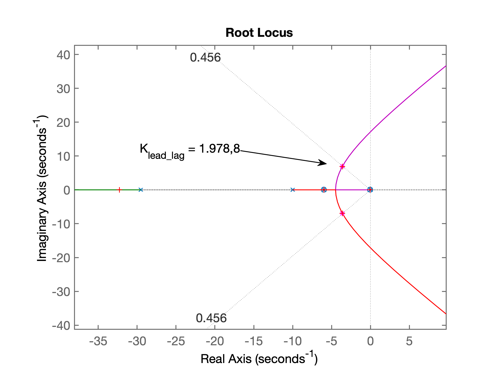

Aula de 28/05/2019
Projeto de controlador Lead/Lag usando abordagem de NISE:
Para planta:
Requisitos de controle:
Iniciando projeto pelo Controlador Proporcional
>> G = tf( 1 , poly( [0 -6 -10 ] ) );>> zpk(G) 1 -------------- s (s+10) (s+6) Continuous-time zero/pole/gain model.>> OS=20;>> zeta=(-log(OS/100))./(sqrt(pi*pi+(log(OS/100)).^2))zeta = 0.4559>> rlocus(G)>> sgrid(zeta, 0)>> [K, polosMF] = rlocfind(G)Select a point in the graphics windowselected_point = -1.8023 + 3.4724iK = 189.7500polosMF = -12.3943 + 0.0000i -1.8029 + 3.4726i -1.8029 - 3.4726i>> % Estimando ts com base em eq. para sistemas de MF de 2a-ordem>> ts = 4/(real(polosMF(2)))ts = -2.2187>> new_ts = -ts/2new_ts = 1.1093>> new_sigma=4/new_tsnew_sigma = 3.6057>> hold on;>> plot([new_sigma new_sigma], [-8 8], 'r--' )>> plot([-new_sigma -new_sigma], [-8 8], 'r--' )Gráfico gerado para o RL incluíndo posição desejada para os pólos de MF:
Continuando cálculos:
>> % falta definir wd = parte imaginaria polos de MF desejados>> theta=cos(zeta);>> theta*180/pians = 51.4426>> new_omega=new_sigma*tan(theta)new_omega = 4.5237>> 180-theta*180/pians = 128.5574>> theta=atan2( imag(polosMF(2)), real(polosMF(2) ))theta = 2.0497>> theta*180/pians = 117.4368>> 180-theta*180/pians = 62.5632>> % Confirmando no gráfico fig1.eps/fig/png>> % Novo valor para parte real do polo de MF desejado>> new_omega=new_sigma*tan(pi-theta)new_omega = 6.9453>> hold on;>> plot([-new_sigma -new_sigma], [new_omega -new_omega], 'r*' )>> polos_MFd=[-new_sigma+i*new_omega -new_sigma-i*new_omega]polos_MFd = -3.6057 + 6.9453i -3.6057 - 6.9453i>> theta*180/pians = 117.4368>> % Iniciando projeto de Controlador por Avanço de Fase (Lead) >> % calculando ângulos formados pelos pólos da planta:>> theta_p2=atan2( imag(polos_MFd(1)), -10)theta_p2 = 2.5345>> theta_p2*180/pi % angulo em grausans = 145.2190>> theta_p2=pi-theta_p2theta_p2 = 0.6070>> theta_p2*180/pians = 34.7810>> Sum_theta=theta+theta_p2Sum_theta = 2.6567>> pians = 3.1416>> theta_lead = pi - Sum_thetatheta_lead = 0.4849>> theta_lead*180/pi % ângulo em graus para pólo do Leadans = 27.7822>> % Este ângulo parece elevado...>> p_lead=imag(polos_MFd(1))/tan(theta_lead)p_lead = 13.1828>> % Montando eq. do Lead:>> C_Lead=tf(poly(-6), poly( -p_lead))C_Lead = s + 6 --------- s + 13.18>> % Determinando FTMA(s) intermediário = Lead + Planta>> ftma_lead=C_Lead*G;>> zpk(ftma_lead) (s+6) ------------------------ s (s+13.18) (s+10) (s+6)>> figure; rlocus(ftma_lead)>> hold on;>> sgrid(zeta, 0)>> plot(polos_MFd, 'm*')>> theta_lead=15*pi/180 % transformando 15o em radianostheta_lead = 0.2618>> p_lead=imag(polos_MFd(1))/tan(theta_lead)p_lead = 25.9201% O valor acima parece improvável... erro no cálculo dos% angulos, foi esquecido de acrescentar a parte real do % poloMF desajado - alguns angulos incorretos...>> p_lead = -( p_lead - real(polos_MFd(1))) p_lead = -29.5258>> C_Lead=tf(poly(-6), poly( p_lead))C_Lead = s + 6 --------- s + 29.53>> ftma_lead=C_Lead*G;>> figure; rlocus(ftma_lead)>> hold on; sgrid(zeta,0)>> plot(polos_MFd, 'm*')>> % Encontrando ganho do Lead>> [K_lead, polosMF] = rlocfind(ftma_lead)Select a point in the graphics windowselected_point = -3.6135 + 6.9660iK_lead = 1.9899e+03polosMF = -32.2905 + 0.0000i -3.6177 + 6.9670i -3.6177 - 6.9670i -6.0000 + 0.0000iRL final obtido para o Controlador Lead (1a-etapa do projeto):
Fechando malha para o Lead (curiosidade):
>> ftmf=feedback(K*G, 1);>> ftmf_lead=feedback(K_lead*ftma_lead, 1);>> figure; step(ftmf, ftmf_lead)Resposta ao degrau unitário alcançada para o Compensador por Avanço de Fase (Lead):
>> zpk(G)1--------------s (s+10) (s+6)>> % Planta: sitema tipo 1 = erro nulo para entrada degrau>> K % mostrando ganho adotado para controlador proporcionalK = 189.7500>> % acrescentando um integrador, variável 'aux`>> aux=tf(1, [1 0])1-s>> % acrescentando integrador à planta:>> sG =aux*G;>> dcgain(K*sG)ans =Inf>> zpk(sG)1----------------s^2 (s+10) (s+6)>> dcgain(K*G)ans = Inf>> KK = 189.7500>> % contante de erro de velocidade>> Kv_prop=K/(6*10)Kv_prop = 3.1625>> % Calculando erro para entrada rampa:>> e_ramp_prop=1/Kv_prope_ramp_prop = 0.3162>> % criando vetor para simular entrada rampa>> t=0:0.01:2;>> u=1*t;>> figure; plot(t, u) % confirmando a rampa>> 1/0.01 % descobrindo k para t=1 segundoans = 100>> u(100)ans = 0.9900>> u(101)ans = 1>> u(1, 101:201)=1;>> figure; plot(t, u)
Figura final mostrando vetor criado para simular entrada rampa + degrau:
Fechando malha para a entrada (referência) anterior:
>> zpk(ftmf) 189.75 -------------------------------- (s+12.39) (s^2 + 3.606s + 15.31)>> figure; lsim(ftmf, u, t)Resultado da resposta do sistema para entrada rampa + degrau:
Se percebe que a rampa poderia ter durado mais tempo e que a resposta ao degrau poderia ter sido um pouco mais longa readequanto vetor :
>> t=0:0.01:4;>> u=1*t;>> 1.5/0.01ans = 150% confirmando onde o vetor u(kT)=1.5 (k>=151)>> u(151)ans = 1.5000>> u(1, 151:401)=1.5;>> figure; plot(t, u)Novo vetor sintetizado:
Simulando novamente:
>> figure; lsim(ftmf, u, t)
Resposta à rampa + degrau:
>> 1.5-0.03ans = 1.4700>> figure; lsim(ftmf_lead, u, t)>> 1.5-1.35ans = 0.1500% ou 15% de erro para entrada rampa em "regime permanente"De quanto deveria ser redução do erro para entrada rampa ?
xxxxxxxxxx>> % já que para entrada degrau não há erro (sistema tipo 1)>> .15/0.03ans = 5>> % Entrando com dados do Controlador por Atraso de Fase>> % assumindo valores propostos por NISE,>> % Se supõe que o pólo foi arbitrado em s = -0.01>> % e que por contribuição angular, o zero tenha ficado >> % localizado em z = -0.04713>> C_Lag=tf( [1 0.04713 ] , [1 0.01 ] )C_Lag = s + 0.04713 ----------- s + 0.01Continuous-time transfer function.>> ftma_lead_lag=C_Lag*C_Lead*G;>> zpk(ftma_lead_lag) (s+6) (s+0.04713) --------------------------------- s (s+29.53) (s+10) (s+6) (s+0.01)>> figure; rlocus(ftma_lead_lag)>> hold on;>> sgrid(zeta, 0)>> plot(polos_MFd, 'm*') % este plot é para confirmar que RL>> % passa sobre os pólos desejados de MF (Ok)RL para controlador Lead-Lag:

Definindo o ganho para o controlador Lead/Lag:
xxxxxxxxxx>> [K_lead_lag,polosMF]=rlocfind(ftma_lead_lag)Select a point in the graphics windowselected_point = -3.5893 + 6.9213iK_lead_lag = 1.9788e+03polosMF = -32.2751 + 0.0000i -3.6067 + 6.9255i -3.6067 - 6.9255i -6.0000 + 0.0000i -0.0474 + 0.0000i>> C_lead_lag=K_lead_lag*C_Lag*C_LeadC_lead_lag = 1979 s^2 + 1.197e04 s + 559.6 ----------------------------- s^2 + 29.54 s + 0.2953>> % Equação final do controlador Lead/Lad, incluindo ganho:>> zpk(C_lead_lag) 1978.8 (s+6) (s+0.04713) ------------------------ (s+29.53) (s+0.01)>> % Fechando malha para Lead-Lag>> ftmf_lead_lag=feedback(K_lead_lag*ftma_lead_lag, 1);>> figure; lsim(ftmf_lead_lag, u, t)Resposta final obtida para controlador Lead-Lag:
\comment: fig13.png(lead_lag/fig13.png)
Repare que o erro em regime permanente para rampa ficou em:
xxxxxxxxxx>> 1.5 - 1.36 = 0.14>> % ou 14% de erro>> % FTMA(s) com Lead-Lag>> zpk(ftma_lead_lag) (s+6) (s+0.04713) --------------------------------- s (s+29.53) (s+10) (s+6) (s+0.01)O resultado final não impressiona muito... não se percebe redução do erro....
Falta melhorar.
Fernando Passold, 28/05/2019